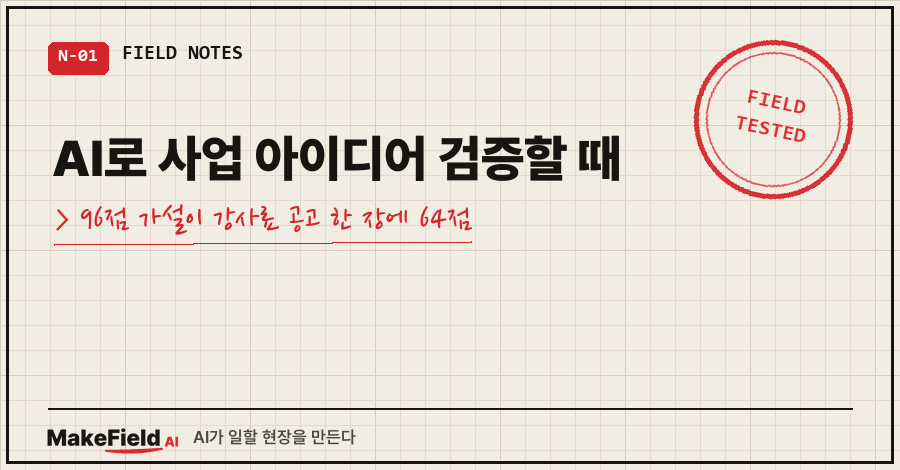
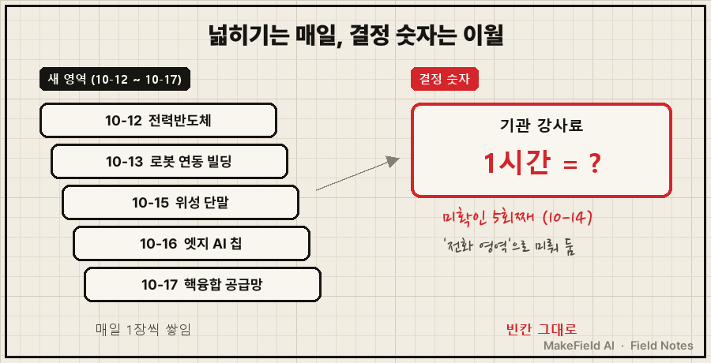
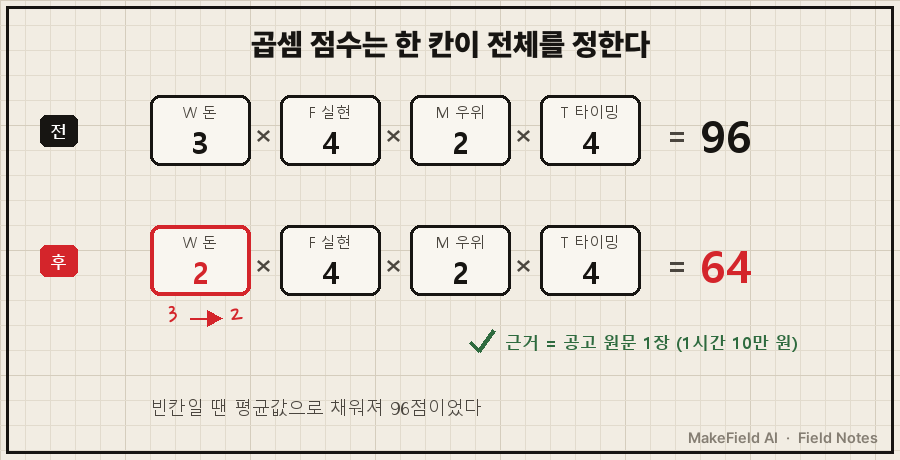
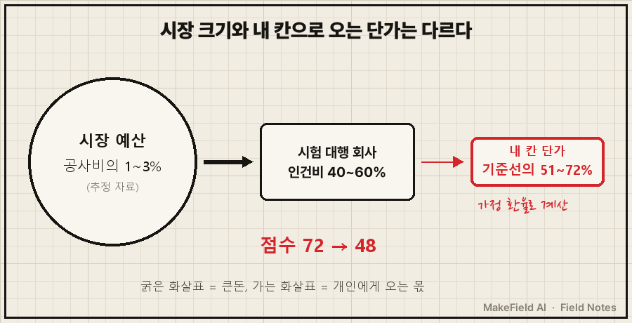

AI로 사업 아이디어 검증을 맡기면 점수는 금방 나와요. 문제는 그 점수가 아직 안 잰 숫자 위에 서 있을 때가 있다는 거예요.
핵심 사실 한 줄. 지역 상공회의소 2026 강사풀 공고 원문에 적힌 외부 강사료는 "강의 1시간당 10만 원, 4시간 초과분은 1시간당 5만 원"이었고, 이 숫자 하나로 AI가 96점을 준 교육형 부업 가설이 64점이 됐어요.
제조 설비 제어 일을 15년 해 왔고, 몇 년 뒤의 부업 방향을 요즘 AI랑 같이 따져 보는 중이에요.
이번 글은 그 과정에서 AI가 점수는 잘 매기는데, 정작 점수를 뒤집을 숫자 하나는 열흘 동안 미룬 이야기입니다.
1. AI한테 120일짜리 '돈 되는 문제 찾기'를 맡겼어요
10월 2일부터 AI가 매일 혼자 산업 영역을 훑고, 가설마다 점수를 매기게 해 뒀어요.
점수는 네 칸을 곱해요. W(돈이 되는 크기)·F(실현 가능성)·M(남보다 잘할 수 있는 정도)·T(타이밍), 각 1~5점.
상위권에 올라온 것 중 하나가 "산업 조직 대상 AI 에이전트 교육"이었어요.
3 × 4 × 2 × 4 = 96점.
판정 기준은 단순했어요. "내가 정해 둔 시간당 기준선을 넘는가."
그러니까 이 가설에서 제일 중요한 칸은 W였고, W를 정하는 건 기관이 외부 강사에게 실제로 얼마를 주는가, 숫자 하나였어요.
2. 그 숫자 하나가 열흘 동안 '미확인'이었어요
AI 일지를 날짜순으로 다시 읽어 보니 이렇게 적혀 있더라고요.
10-08 단, 강사료가 시간당 기준선(…)을 넘는지는 미확인이다. 오늘의 가장 큰 미지수다.
10-11 셋 다 강사 단가 미확인이다. 이 숫자 하나가 상위 4개 가설의 W·F를 동시에 정한다.
10-14 교육기관(폴리텍·공동훈련센터) | … | 중간 — 강사료 미확인(5회째, 전화 영역)본인이 "가장 큰 미지수"라고 써 놓고, 다음 날 일지엔 "내일 검증"으로 넘기고, 또 넘기고..
그 사이 루프는 성실하게 새 영역을 열었어요. 10월 12~17일 엿새 동안 영역 확장 일지만 5편이에요. 전력반도체, 로봇 연동 빌딩, 위성 단말, 엣지 AI 칩, 핵융합 공급망.

그림 내용을 글로 쓰면, 한쪽엔 새 영역 카드가 매일 한 장씩 쌓이는데 다른 쪽의 결정 숫자 칸은 계속 비어 있는 모양이에요.
넓히는 일은 검색 몇 번이면 '진행한 것처럼' 보이거든요. 단가 하나를 재는 건 답이 안 나올 수도 있는 일이라 자꾸 뒤로 밀린 거예요. 게다가 AI는 그걸 "전화 영역", 그러니까 전화로 물어봐야 알 수 있는 숫자라고 스스로 결론을 내려 둔 상태였어요.
3. 공고 PDF 한 장에 이미 답이 있었어요
10월 18일 주간종합 날, 웹 검색 13번 중에 한 지역 상공회의소의 2026 강사풀 모집 공고 PDF가 걸렸어요. 원문은 이랬어요.
강의 1시간당 10만 원, 1일 강의가 4시간을 초과하는 경우 초과분은 1시간당 5만 원전화할 필요도 없었어요. 공개 공고에 그대로 있었거든요.
교안 준비나 이동 시간을 빼기 전, 강의 시간만 쳐도 제 기준선 아래였어요.
같은 날 한국생산성본부(KPC)의 2026 AI 강사 공개모집도 원문으로 확인했어요. 생산·R&D·품질 분야 '직무 융합 AI 강사'를 뽑는데 학력·연령 제한이 없고 재직자도 일정 협의가 가능하대요. 문이 열려 있다는 뜻이지만, 같은 문으로 들어올 사람도 많다는 뜻이에요. 단가가 오를 근거는 아니죠. 강사료는 공고에 아예 없었어요.
| 칸 | 바뀌기 전 | 바뀐 뒤 | 근거 |
|---|---|---|---|
| W(돈) | 3 | 2 | 공고 원문 시간당 10만 원 |
| F(실현) | 4 | 4 | 지원 문턱 낮음 |
| M(우위) | 2 | 2 | 변동 없음 |
| T(타이밍) | 4 | 4 | 변동 없음 |
| 총점 | 96 | 64 | 곱셈이라 한 칸이 1/3을 깎음 |

곱셈 점수에선 가장 약한 칸 하나가 전체를 끌어내려요. 그런데 그 칸이 비어 있는 동안엔 AI가 평균적인 값으로 채워 넣고 96점을 줬던 거예요.
4. 사흘 뒤, 같은 일이 한 번 더 있었어요
10월 21일에는 '데이터센터 정전 대비 통합 시험 도구'를 파는 가설을 봤어요.
시장은 컸어요. 통합 시험 예산이 공사비의 1~3% 수준이라는 비용 가이드도 있었고요(추정 자료).
그런데 돈이 흐르는 길을 따라가 보니 건물 주인 → 시험 대행 회사(예산 중 인건비 40~60%) → 현장 상주 인력이었어요. 개인이 '사람'으로 들어가면 가정 환율로 계산해서 제 기준선의 51~72%. 이번엔 AI가 그날 바로 단가부터 계산했고, 점수는 72 → 48이 됐어요.

시장이 큰 것과, 그 돈이 내 칸으로 오는 단가는 서로 다른 숫자였어요.
5. 그래서 '강의는 돈이 안 된다'는 결론일까요?
아니에요. 이건 AI가 자기 결론에 남긴 반증 메모가 더 정확하게 말해 줘요.
10만 원은 지역 상의 1곳·일반 역량 교육 기준이다. 기술 전문 과정(PLC·OT 보안)은 더 받을 수 있다.
H-004 하향은 '기관 경유' 경로 기준이다. 기업 직접 위탁 단가 1건이 기준선을 넘으면 W 2→3으로 되돌린다.바뀐 건 "기관을 거쳐 강의하면 시간당 얼마인가"라는 한 경로의 점수예요. 기업에 직접 들어가는 강의 단가는 아직 0건이고, 그 숫자가 나오면 점수는 다시 움직여요.
그리고 솔직히, 이월하는 버릇은 아직 남아 있어요. 다음 주 질문표에도 "2주 이월"이라고 붙은 항목이 또 있었거든요.
그래도 이 기록에서 건진 건 분명해요. AI가 매긴 점수는, 그 점수를 뒤집을 숫자 하나를 쟀는지만큼만 믿을 수 있다.
그래서 AI한테 아이디어 점수를 받으면 아래 세 가지부터 확인해 보시길 권해요.
- 이 점수에서 한 칸만 바뀌어도 순위가 뒤집히는 칸은 어디인가
- 그 칸의 숫자는 원문으로 확인한 값인가, 추정인가
- "전화해야 안다"고 미뤄 둔 숫자, 공개 공고·단가표로 먼저 찾아봤는가
자주 묻는 질문
Q. AI로 사업 아이디어 검증을 하면 점수를 믿어도 되나요?
순위를 좁히는 데는 쓸 만했어요. 다만 점수의 근거마다 '확정/추정/미확인' 표시를 붙이게 하고, 미확인 칸이 점수를 좌우하면 그 칸부터 재세요.
Q. 강사료는 어디서 찾을 수 있나요?
저는 지역 상공회의소 강사풀 모집 공고 원문 PDF에서 찾았어요. 공공 교육기관 강사 공모는 강사료를 안 적는 곳도 있어서, 공고 몇 곳을 같이 보는 게 안전해요. 지역·과정마다 다를 수 있다는 점도 함께 적어 두세요.
Q. 시장 규모 숫자는 안 봐도 되나요?
보긴 봐요. 다만 시장 규모 옆에 "누가, 누구에게, 시간당 얼마"를 한 줄로 같이 써 보세요. 그 한 줄이 안 채워지면 시장이 아무리 커도 제 점수는 보류예요.
AI한테 맡긴 판단을 숫자 하나로 다시 검산해 본 기록들은 makefield.ai에도 모아 두고 있어요.
출처
- 진천상공회의소, 2026년 교육과정 강사풀 모집 공고문(PDF) — "강의 1시간당 10만 원, 1일 강의가 4시간을 초과하는 경우 초과분은 1시간당 5만 원" (2026-10-18 원문 확인)
- 한국생산성본부(KPC), 2026 AI 강사 공개모집 공지 — 직무 융합 AI 강사(생산·R&D·품질·물류), 학력·연령 제한 없음, 강사료 미기재 (2026-10-18 원문 확인) → https://kpc.or.kr/kpc/PTWHP004_noti_view.do?npno=28136
- 데이터센터 시운전 비용 가이드(통합 시험 공사비 1~3%, 대행사 인건비 40~60%) — 채용·컨설팅사 자료, 1차 통계 아님(추정)
- 사례: 2026-10-02~10-21 개인 120일 자율 조사 일지(가설 채점·반증 메모) 기록
태그: #AI로사업아이디어검증 #사업아이디어검증 #AI부업 #부업아이디어 #강사료 #강사료시간당 #상공회의소강사풀 #한국생산성본부 #AI리서치 #AI리서치한계 #시장규모 #단가계산 #AI오답노트 #ClaudeCode #MakeFieldAI